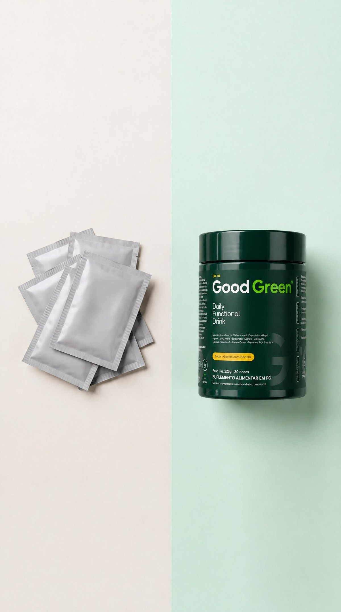

O que mais incomoda no seu dia?
Marque tudo o que acontece com você.
Perguntamos sobre a sua rotina para mostrar a informação certa sobre a Good Green. Nenhuma resposta é compartilhada com terceiros. Ao continuar, você concorda com a nossa política de privacidade.
Quase sempre, falta verde no prato.
Couve, espirulina, fibras, vitaminas e minerais são o que menos entra na rotina de quem corre o dia inteiro. A Good Green junta tudo isso numa medida.

- Couve, espirulina, gengibre, cúrcuma e guaraná
- Fibras e ingredientes vegetais: maçã, água de coco, beterraba
- Rico em vitaminas C, B2, B6 e B12, cromo e zinco
Com que frequência você vai ao banheiro?
Sem vergonha: isso diz muito sobre a sua rotina.
Fibras e verdes todo dia, sem liquidificador.
A rotina que a maioria abandona na segunda semana é a do suco verde caseiro. Uma medida de Good Green em 300 ml de água leva 30 segundos.

- Uma medida de 7,5 g, uma vez ao dia
- Em 300 ml de água, gelada se preferir
- Baixo em calorias, zero lactose, não contém glúten
Quantas porções de verdes você come por dia?
Couve, espinafre, rúcula, brócolis, salada de folhas.
Abacaxi com hortelã.
Zero gosto de grama.
A base leva couve, espirulina, gengibre e cúrcuma, mas o abacaxi com hortelã aparece primeiro no gole. Gelado fica ainda melhor.

- Leve e refrescante, sem bagaço e sem coador
- Com a cafeína natural do guaraná
- 30 doses por pote
O que você já tentou para resolver?
Vale tudo o que você já colocou na rotina.
Um pote no lugar de vários.
Em vez de abrir três potes de manhã, uma bebida só. Por porção: 45 mg de vitamina C, 100% do VD de B6 e B12, 571% do VD de cromo, segundo a tabela do rótulo.

- Vitaminas C, B2, B6 e B12
- Cromo e zinco
- Pause ou cancele a assinatura quando quiser
Libere a garrafa de vidro de brinde.
Deixe seu contato e receba o link com a garrafa de vidro aplicada no seu primeiro pedido, mais o seu resultado.


Você recebe o aviso do lançamento e as ofertas da marca por WhatsApp e e-mail. Sem spam, e dá para sair quando quiser.
Seu resultado.

Este produto não é um medicamento e não substitui orientação de nutricionista ou médico. Indicado para maiores de 19 anos. Não deve ser consumido por gestantes, lactantes e crianças. Contém cafeína (guaraná). Garrafa de vidro de brinde válida para o primeiro pedido da assinatura, enquanto durar o lote.